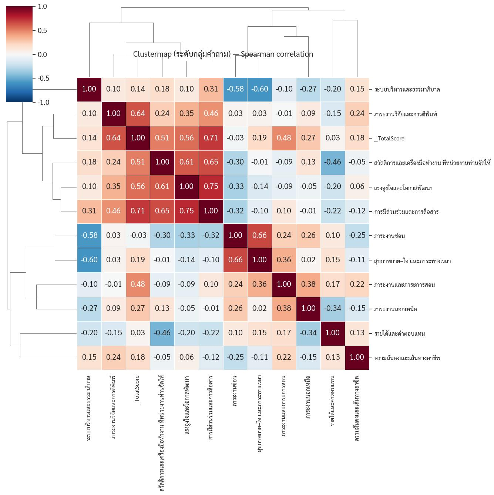

ผลวิเคราะห์เบื้องต้นชี้ว่าอาจารย์ไทยยังเข้มแข็ง แต่กำลังถูกจำกัดด้วยโครงสร้างที่ไม่ยืดหยุ่น
{kind=link}

บทความนี้เป็นการเปิดเผย ผลวิเคราะห์เบื้องต้น จากแบบสอบถาม “คุณภาพชีวิตและความมั่นคงในอาชีพของอาจารย์” ซึ่งผู้เขียนจัดทำขึ้นเพื่อเข้าใจความรู้สึกจริงของคนในระบบ ไม่ใช่เพื่อทำงานวิชาการเชิงพิธีหรือสร้างผลงานส่วนตัว แต่เพื่อหาทางยกประเด็นนี้ไปพูดในเวทีที่เหมาะสม
ภาพรวมที่ออกมาค่อนข้างชัดคือ อาจารย์ไทยยังมีแรงขับทางวิชาการและยังทุ่มเทต่อมหาวิทยาลัยสูง แต่กำลังติดอยู่ในโครงสร้างที่ ไม่ยืดหยุ่นและไม่ไว้วางใจคนทำงาน มากพอ ทั้งในมิติภาระงาน เอกสาร ธรรมาภิบาล งานวิจัย รายได้ และการยอมรับคุณค่าของงาน
ความน่าสนใจของโพสต์นี้คือการไม่สรุปแบบกว้าง ๆ ว่าอาจารย์เหนื่อยหรือระบบมีปัญหา แต่แจกแจงเป็นหมวดที่แตะชีวิตจริงของคนในมหาวิทยาลัยโดยตรง ตั้งแต่ภาระสอนและเอกสาร แรงจูงใจทางวิชาการ ธรรมาภิบาล งานวิจัย รายได้ ความมั่นคง และคุณค่าที่อาจารย์สร้างให้มหาวิทยาลัย
อาจารย์ยังมีแรงขับสูง แต่ระบบสนับสนุนยังไม่เอื้อ
หนึ่งในข้อค้นพบที่สำคัญมากคือ ผู้เขียนไม่ได้มองว่าอาจารย์หมดแรงหรือหมดคุณภาพ ตรงกันข้าม เขาชี้ว่าอาจารย์ไทยยังมี แรงจูงใจทางวิชาการสูง และยังทุ่มเทกับงานทั้งด้านการสอน วิจัย และกิจกรรมของมหาวิทยาลัยอยู่มาก
ปัญหาอยู่ที่ระบบสนับสนุนยังไม่เอื้อให้แรงขับนี้แปรเป็นคุณค่าระยะยาวได้เต็มที่ เมื่อภาระสอนและงานเอกสารมากเกินไป ระบบก็เริ่มกินพลังที่ควรถูกใช้ไปกับการพัฒนาความรู้และการสร้างบัณฑิต
ธรรมาภิบาลและความไว้วางใจคือแรงจูงใจจริง ไม่ใช่แค่เรื่องภาพลักษณ์องค์กร
ผู้เขียนสรุปไว้น่าสนใจมากว่า ความโปร่งใสและการมีส่วนร่วมไม่ใช่เพียงเรื่องสวยงามเชิงหลักการ แต่เป็น ปัจจัยสร้างแรงจูงใจที่แท้จริง เพราะเมื่อคนในระบบรู้สึกว่ามีส่วนร่วมและได้รับความเป็นธรรม เขาจะมีพลังในการทำงานมากกว่าระบบที่เน้นควบคุมและสั่งการ
มุมนี้เชื่อมตรงกับข้อเสนอปิดท้ายของโพสต์ว่า หากคืนอำนาจในการจัดการเวลาและคืนความไว้วางใจให้กับอาจารย์ ระบบอาจดีขึ้นได้เองโดยธรรมชาติ มากกว่าการเพิ่มกลไกกำกับที่ซับซ้อนขึ้นเรื่อย ๆ
ภาระวิจัย รายได้ และความเหลื่อมล้ำกำลังกระทบสมดุลชีวิตมากขึ้น
ผลวิเคราะห์เบื้องต้นยังชี้ว่าแรงกดดันจากระบบตีพิมพ์เริ่มกระทบสมดุลชีวิตและสุขภาพของอาจารย์ ขณะเดียวกันความเหลื่อมล้ำระหว่างสายบริหารกับสายวิชาการก็ยังสูง นี่ทำให้ประเด็นคุณภาพชีวิตไม่ใช่เรื่องอารมณ์หรือความรู้สึกส่วนตัว แต่เป็นเรื่องของ โครงสร้างแรงจูงใจและการกระจายคุณค่า ในมหาวิทยาลัย
เมื่อระบบให้รางวัลบางบทบาทมากกว่าอีกบทบาทอย่างชัดเจน คนที่ทำหน้าที่หลักด้านการสอนและวิชาการก็ย่อมรู้สึกว่าคุณค่าของตนไม่ได้รับการยอมรับอย่างเหมาะสม
ข้อสรุปสำคัญคือคุณภาพของอาจารย์ยังไม่ถอย แต่ระบบกำลังบีบพื้นที่ของคุณภาพนั้น
ประโยคสรุปของโพสต์นี้สำคัญมาก: “คุณภาพของอาจารย์ไทยยังเข้มแข็ง” แต่กำลังถูกจำกัดด้วยโครงสร้างที่ไม่ยืดหยุ่น นี่เป็นการวางปัญหาอย่างมีความหวัง เพราะไม่ได้โทษคนในระบบว่าอ่อนแอหรือไม่พร้อม แต่ชี้ว่าศักยภาพยังมีอยู่ เพียงแต่ระบบกำลังบีบไม่ให้มันเติบโตได้เต็มที่
ดังนั้น โพสต์นี้จึงทำหน้าที่เป็นทั้งภาพรวมเบื้องต้นของปัญหา และเป็นฐานสำหรับการขยับบทสนทนาไปสู่เวทีนโยบายในขั้นต่อไป เพื่อให้ทุกคนเห็นภาพเดียวกันก่อนพูดเรื่องทางออก